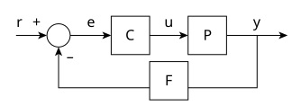

Analog Engineering Hub
Back to Tools

Plant + Compensator Control System
Compensator Parameters
Include Origin Pole
Pole Frequency (kHz):
Zero Frequency (kHz):
Desired Gain (dB):
at Frequency (kHz):
Plant Parameters
Desired Gain (dB):
at Frequency (kHz):
Low-Frequency Pole (kHz):
Include Mid-Frequency Zero
Mid-Frequency Zero (kHz):
Include High-Frequency Pole
High-Frequency Pole (kHz):
Feedback Parameters
Feedback Gain:
Include Zero
Zero Frequency (kHz):
Axis Limits
X-Axis Min (kHz):
X-Axis Max (kHz):
Plant Y-Axis Mag Min (dB):
Plant Y-Axis Mag Max (dB):
Feedback Y-Axis Mag Min (dB):
Feedback Y-Axis Mag Max (dB):
Compensator Y-Axis Mag Min (dB):
Compensator Y-Axis Mag Max (dB):
Closed-Loop Y-Axis Mag Min (dB):
Closed-Loop Y-Axis Mag Max (dB):
Y-Axis Phase Min (°):
Y-Axis Phase Max (°):
Plant Transfer Function:
\( P(s) = \)
Compensator Transfer Function:
\( C(s) = \)
Feedback Transfer Function:
\( F(s) = \)
Closed-Loop Transfer Function:
\( T(s) = \)
Phase Margin:
N/A
Gain Margin:
N/A